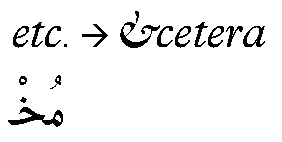
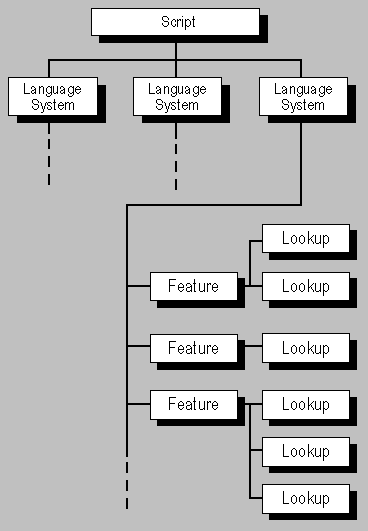

node specs/download-spec.mjs. Spec indexOpenType Layout makes use of five tables: the Glyph Substitution table (GSUB), the Glyph Positioning table (GPOS), the Baseline table (BASE), the Justification table (JSTF), and the Glyph Definition table (GDEF). These tables use some of the same data formats. This chapter defines these common formats and explains conventions used in all OpenType Layout tables. The common formats are also used in the Mathematical Typesetting table (MATH). Separate chapters provide all other details of the GSUB, GPOS, BASE, JSTF, GDEF and MATH tables.
Example tables and lists that illustrate the common data formats are supplied at the end of this chapter.
The OpenType Layout tables provide typographic information for substituting and positioning glyphs, operations that are required for correct text display of many scripts as well as for high quality typography. OpenType Layout data is organized by script, language system, typographic feature, and lookup.
At the top level, data is organized by script. A script is a collection of glyphs used to represent one or more languages in written form (see Figure 2a). For instance, a single script, Latin, is used to write English, French, German, and many other languages. In contrast, Japanese is written using three scripts: Hiragana, Katakana, and Kanji. With OpenType Layout, multiple scripts can be supported by a single font.
For each script, data is then organized by one or more language systems, which allows a font to support different typographic conventions for different language contexts. For example, Turkish has different upper and lower case relationships from most other languages written with Latin script, and that affects the glyph selection that is needed when a small caps feature ('smcp') is used.

A language system specifies features, which represent typographic effects on glyphs. Some examples of features are a 'vert' feature for substituting vertical glyphs in Japanese, a 'liga' feature for using ligatures in place of separate glyphs, and a 'mark' feature for positioning diacritical marks with respect to base glyphs in Arabic.

In the absence of language-specific rules, a default language system specifies features to be applied for the given script. For instance, a default language system feature for the Arabic script would specify features to substitute initial, medial, and final glyph forms based on a glyph’s position in a word.
An application may use its own criteria to determine when to use a specific language system or the default language system. When doing layout for a run of text, it uses features specified by one or the other, but not both.
Features are implemented with lookup data that the text-processing client uses to substitute and position glyphs. Lookups describe the glyphs affected by an operation, the type of operation to be applied to these glyphs, and the resulting glyph output.
A font may also include FeatureVariations data within a GPOS or GSUB table that allows the default lookup data associated with a feature to be substituted by alternate lookup data when particular conditions apply. Currently, this mechanism is used only for variable fonts using OpenType Font Variations.
OpenType Font Variations allow a single font to support many design variations along one or more axes of design variation. For example, a font with weight and width variations might support weights from thin to black, and widths from ultra-condensed to ultra-expanded. For general information on OpenType Font Variations, see the chapter, OpenType Font Variations Overview.
When different variation instances are selected, the design and metrics of individual glyphs changes. This can impact font-unit values given in GPOS, BASE, JSTF or GDEF tables, such as the X and Y coordinates of an attachment anchor position. The font-unit values given in these tables apply to the default instance of a variable font. If adjustments are needed for different variation instances, this is done using variation data with processes similar to those used for glyph outlines and other font data, as described in the chapter, OpenType Font Variations Overview. The variation data for GPOS, JSTF or GDEF values is contained in an ItemVariationStore table which, in turn, is contained within the GDEF table; variation data for BASE values is contained in an ItemVariationStore table within the BASE table itself. The format of the ItemVariationStore is described in detail in the chapter, OpenType Font Variations Common Table Formats. For font-unit values within the GPOS, BASE, JSTF or GDEF tables that require variation, references to specific variation data within the ItemVariationStore are provided in VariationIndex tables, described below.
In some variable fonts, it might be desirable to have different glyph-substitution or glyph-positioning actions used for different regions within the font’s variation space. For example, for narrow or heavy instances in which counters become small, it might be desirable to make certain glyph substitutions to use alternate glyphs with certain strokes removed or outlines simplified to allow for larger counters. Such effects can be achieved using a FeatureVariations table within either the GSUB or GPOS table. The FeatureVariations table is described below.
Two OpenType Layout tables, GSUB and GPOS, use the same data formats to describe the scripts and languages they support, and the typographic glyph operations used for each supported script and language: a ScriptList table, a FeatureList table, a LookupList table, and an optional FeatureVariations table. In GSUB, the tables define glyph substitution data. In GPOS, they define glyph positioning data. This section describes the organization and relationship between these formats; the following sections describe the formats in detail.
The ScriptList identifies the scripts in a font, each of which is represented by a Script table. Each Script table has a default language system table plus zero or more tables for specific language systems. Language system tables reference Feature tables defined in the FeatureList. Each Feature table references Lookup tables defined in the LookupList that describes glyph actions that implement the feature.

Note: The data in the BASE and JSTF tables also is organized by script and language system. However, the data formats differ from those in GSUB and GPOS, and they do not include a FeatureList or LookupList. The BASE and JSTF data formats are described in the BASE and JSTF chapters.
The information used to substitute and position glyphs is defined in Lookup subtables. Each subtable supplies one type of information, depending upon whether the lookup is part of a GSUB or GPOS table. For instance, a GSUB lookup might specify the glyphs to be substituted and the context in which a substitution occurs, and a GPOS lookup might specify glyph position adjustments for kerning. OpenType Layout has eight types of GSUB lookups (described in the GSUB chapter) and nine types of GPOS lookups (described in the GPOS chapter).
Each subtable (except for an Extension LookupType subtable) includes a Coverage table that lists the “covered” glyphs that will result in a glyph substitution or positioning operation. The Coverage table formats are described in a later section of this chapter.
Some substitution or positioning operations could apply to groups, or classes, of glyphs. GSUB and GPOS Lookup subtables use the Class Definition table to assign glyphs to classes. A description of the Class Definition table formats is provided later in this chapter.
In non-variable fonts, GPOS Lookup subtables may also contain Device tables to adjust scaled contour glyph coordinates for particular output sizes and resolutions. Device tables can also be used for similar adjustments to baseline metric or caret offset values in the BASE and GDEF tables. Similarly, in variable fonts, GPOS lookup subtables, BaseCoord tables and CaretValue tables may contain VariationIndex tables that reference variation data to adjust font-unit values as needed for different variation instances within a font’s design variation space. Device and VariationIndex tables are described in a later section of this chapter.
As mentioned above, a feature table references a set of lookups in the lookup list. The FeatureVariations table allows the default set of lookups used for a given feature to be substituted by a different set of lookups under particular conditions. This can be used in variable fonts to provide different substitution or positioning actions for different variation instances. For example, for narrow or heavy instances in which counters become small, it may be desirable to make certain glyph substitutions to use alternate glyphs with certain strokes removed or outlines simplified to allow for larger counters.
Three tables and their associated records apply to scripts and languages: the ScriptList table and its script record (ScriptRecord), the Script table and its language system record (LangSysRecord), and the Language System table (LangSys).
A font may contain one or more groups of glyphs used to render various scripts, which are enumerated in a ScriptList table. Both the GSUB and GPOS tables define ScriptList tables:
A ScriptList table consists of a count of the scripts represented by the glyphs in the font (ScriptCount) and an array of records (ScriptRecord), one for each script for which the font defines script-specific features (a script without script-specific features does not need a ScriptRecord). Each ScriptRecord consists of a ScriptTag that identifies a script, and an offset to a Script table. The ScriptRecord array is stored in alphabetic order of the script tags.
A Script table with the script tag DFLT (default) may be used in a font to define features that are not script-specific. An application should use a DFLT script table if there is not a script table associated with the specific script of the text being formatted, or if the text does not have a specific script (for example, it contains only symbols or punctuation).
Note: If symbols or punctuation have a Unicode script property “Common” but are used together with characters of a specific script, features that apply to those symbol or punctuation characters should not necessarily be organized under the DFLT script, but can be organized under the specific script. Applications may process script-neutral characters together with immediately-preceding or following script-specific characters for better processing efficiency. In that case, an application would look for features that operate on the neutral characters by using the Script table for the specific script. The DFLT script would still be used if the text contained only the neutral characters, however.
If there is a DFLT script table, it must have a default language system table (defaultLangSysOffset must not equal NULL—see below).
As languages are written using particular scripts, it is normally expected that language-specific typographic effects will be associated with a particular script, not with the generic DFLT script. For this reason, a DFLT script table should normally have only the default language system table, not language-specific tables. However, a font may have a DFLT script table with non-default language system tables, and an application may use features associated with one of these if the DFLT script table is applicable — no script table is present for the specific script, or there is no specific script in the text context — and if one of the particular language systems is specified. Under such conditions, applications should support use of a non-default language system table that is associated with DFLT script if a font includes tables with this configuration.
Example 1 at the end of this chapter shows a ScriptList table and ScriptRecords for a Japanese font that uses three scripts.
ScriptList table
| Type | Name | Description |
|---|---|---|
| uint16 | scriptCount | Number of ScriptRecords |
| ScriptRecord | scriptRecords[scriptCount] | Array of ScriptRecords, listed alphabetically by script tag |
ScriptRecord
| Type | Name | Description |
|---|---|---|
| Tag | scriptTag | 4-byte script tag identifier |
| Offset16 | scriptOffset | Offset to Script table, from beginning of ScriptList |
A Script table may specify one or more language systems that define behaviors of the glyphs in a script for a particular language. It also references a default language system that defines behaviors of the script’s glyphs to be used in the absence of language-specific information.
A Script table begins with an offset to the default language system table (defaultLangSysOffset), which defines the set of features that regulate the default behavior for the script. Next, a count of language-specific language systems is given (langSysCount), followed by a corresponding array of language system records (LangSysRecord). Each record specifies a language system using a language system tag (langSysTag), and specifies an offset to a language system table (LangSys). The LangSysRecord array must be sorted alphabetically by language system tag. If no language-specific behavior is defined, the langSysCount field is set to zero and the LangSysRecord array is empty.
Script table
| Type | Name | Description |
|---|---|---|
| Offset16 | defaultLangSysOffset | Offset to default LangSys table, from beginning of Script table — may be NULL. |
| uint16 | langSysCount | Number of records in the langSysRecords array. |
| LangSysRecord | langSysRecords[langSysCount] | Array of LangSysRecords, sorted alphabetically by LangSys tag. |
LangSysRecord
| Type | Name | Description |
|---|---|---|
| Tag | langSysTag | 4-byte LangSysTag identifier. |
| Offset16 | langSysOffset | Offset to LangSys table, from beginning of Script table. |
The language system table (LangSys) identifies features used for layout of the glyphs in a script. Features are specified as zero-based indices into a FeatureList table, defined in the next section of this chapter.
Optionally, a LangSys table may define a required feature index (the requiredFeatureIndex field) to specify one feature as required within the context of a particular language system. For example, in the Cyrillic script, the Serbian language system uses different glyphs for certain characters than the Russian language system. Only one feature index value can be specified as a required feature. This is not a functional limitation, however, because feature and lookup definitions are structured so that one feature table can reference many glyph substitution or positioning lookups. When no required features are defined, then requiredFeatureIndex is set to 0xFFFF.
All other features are considered optional with respect to the general requirements for processing the language system table. Applications, however, may treat certain features as required in certain contexts, regardless of whether a feature is referenced using the requiredFeatureIndex field. In particular, applications may treat certain features as required for correct layout of certain Unicode characters or scripts. Such higher-level requirements are outside the scope of this specification.
Example 2 at the end of this chapter shows a Script table, LangSysRecord, and LangSys table used for contextual positioning in the Arabic script.
LangSys table
| Type | Name | Description |
|---|---|---|
| Offset16 | lookupOrderOffset | Reserved—set to NULL. |
| uint16 | requiredFeatureIndex | Index of a feature required for this language system; if no required features, set to 0xFFFF. |
| uint16 | featureIndexCount | Number of elements in the featureIndices array. |
| uint16 | featureIndices[featureIndexCount] | Array of indices into the FeatureList, in arbitrary order. |
The lookupOrderOffset field is reserved for future use. Indices in the featureIndices array may be in arbitrary order.
Features define the advanced layout capabilities of a font and are named to convey meaning to the text-processing client. Consider a feature identified using the tag 'liga' to create ligatures. Because of its name, the client knows what the feature does and can decide whether to apply it. Several features have been defined and can be used in fonts and applications; see the Feature Tags section of the OpenType Layout Tag Registry for more information. Font developers can also define their own features.
When designing a font, the font developer selects features according to the typographic capabilities the font will support. For each feature, they then implement one or more lookups that describe the glyph substitution or glyph positioning actions to be performed. Multiple lookups may be used for a given feature; in that case the lookup actions will be performed in sequential order. In some cases, multiple lookups applied in a specific order could be needed to obtain a desired effect.
When performing layout on a run of text, a client chooses the features to be applied to the run and then processes the lookups referenced by these features in the order the lookup definitions occur in the LookupList. As a result, within the GSUB or GPOS table, lookups from several different features may be interleaved during text processing. It is up to the font developer to determine the proper order of actions performed by the lookups.
A client may process GSUB features in ordered stages, with particular features processed in each stage. A client may also perform certain operations on glyph sequences, such as reordering of glyphs, before or between these stages. Such processing is required for correct support of many scripts. Details on such script-specific processing is outside the scope of this specification. Within any such feature-processing stage, however, lookups referenced by the features applied in that stage must be processed in LookupList order.
Lookup data is defined in one or more subtables that contain information about specific glyphs and the operations to be performed on them. Different lookup types support different types of operation; for example, positioning adjustment on a single glyph versus positioning adjustments on pairs of glyphs. Each type of lookup has one or more corresponding subtable format definitions. The choice of a subtable type and format depends upon two factors: the precise content of the information being applied to an operation, and the required storage efficiency. For complete definitions of all lookup types and subtables, see the GSUB and GPOS chapters of this document.
Processing of a lookup is finished when the client locates a target glyph or glyph context and performs the substitution or positioning action described.
Features and lookups define information that is specific to the glyphs in a given font. They do not encode information that is constant within the conventions of a particular language or the typography of a particular script. Information that would be replicated across all fonts for a given script or language belongs in the text-processing application for that language, not in the fonts.
The headers of the GSUB and GPOS tables contain offsets to FeatureList tables that enumerate all the features in a font. Features in a FeatureList are not limited to any single script. A FeatureList contains the entire list of either the GSUB or GPOS features that are used for layout of glyphs for all the scripts supported by the font.
The FeatureList table enumerates features in an array of records (FeatureRecord). Every feature requires a FeatureRecord, which consists of a feature tag that identifies the feature and an offset to a Feature table (described in the next section).
Note: The values stored in the FeatureIndex array of a LangSys table are zero-based indices used to locate records in the FeatureRecord array of a FeatureList table.
A Feature table describes the lookups used to implement a given feature for a given script and language system. The implementation for a feature will typically be different for different scripts or language systems, requiring distinct Feature tables. Thus, the FeatureList table may include two or more records with the same feature tag when the feature is implemented for multiple scripts or language systems.
The FeatureRecord array should be sorted alphabetically by feature tag. If two or more records have the same feature tag, their relative order is arbitrary.
FeatureList table
| Type | Name | Description |
|---|---|---|
| uint16 | featureCount | Number of records in the featureRecords array. |
| FeatureRecord | featureRecords[featureCount] | Array of FeatureRecords. |
FeatureRecord
| Type | Name | Description |
|---|---|---|
| Tag | featureTag | 4-byte feature identification tag. |
| Offset16 | featureOffset | Offset to Feature table, from beginning of FeatureList. |
A feature table defines the implementation of a feature using one or more lookups. Feature tables defined within the GSUB table contain references to glyph substitution lookups; feature tables defined within the GPOS table contain references to glyph positioning lookups. If a feature requires both glyph substitution and positioning actions, then Feature tables referenced using the same feature tag will need to be defined in both the GSUB and GPOS tables.
A Feature table consists of an offset to a feature parameters table, a count of the lookups listed for the feature, and an arbitrarily ordered array of indices into a LookupList (described in the next section).
Feature parameters tables may only be used for certain features. The format of a features parameters table is specific to a particular feature and is specified in the description for that feature in the Feature Tags section of the OpenType Layout Tag Registry. Currently, feature parameters tables are defined only for the following features:
A feature parameters table may be required or optional, according to the specifications for a given feature. The length of a feature parameters table must be implicitly or explicitly specified in the table itself. The featureParamsOffset field in the Feature table gives the offset relative to the beginning of the Feature table. If a feature parameters table is not defined for a given feature, or if a feature parameters table is defined but not used in a given font, the featureParamsOffset field must be set to NULL.
To identify the features in a GSUB or GPOS table for a given script and language system, a text-processing client reads the feature tag of each FeatureRecord referenced in the given LangSys table. Then the client selects the features it wants to implement and uses the lookupListIndices arrays from the Feature tables for the selected features to obtain a list of Lookup indices for the chosen features. Next, the client arranges the indices numerically into their LookupList order. Finally, the client retrieves the referenced Lookup tables from the LookupList and applies the lookup data to substitute or position glyphs.
Example 3 at the end of this chapter shows the FeatureList and Feature tables used to substitute ligatures in two languages.
Feature table
| Type | Name | Description |
|---|---|---|
| Offset16 | featureParamsOffset | Offset from start of Feature table to feature parameters table, if defined for the feature and present, else NULL. |
| uint16 | lookupIndexCount | Number of elements in the lookupListIndices array. |
| uint16 | lookupListIndices[lookupIndexCount] | Array of indices into the LookupList — zero-based. |
The headers of the GSUB and GPOS tables contain offsets to LookupList tables for glyph substitution and glyph positioning lookups. The LookupList table contains an array of offsets to Lookup tables. The font developer defines the order of offsets in the array to control the order in which a text-processing client processes lookup data to perform glyph substitution or positioning operations.
Example 4 at the end of this chapter shows three ligature lookups in a LookupList table.
LookupList table
| Type | Name | Description |
|---|---|---|
| uint16 | lookupCount | Number of elements in the lookupOffsets array. |
| Offset16 | lookupOffsets[lookupCount] | Array of offsets to Lookup tables, from beginning of LookupList. |
A Lookup table defines the specific conditions, type, and results of substitution or positioning actions that are used to implement a feature. For example, a substitution operation requires a list of target glyph indices to be replaced, a list of replacement glyph indices, and a description of the type of substitution action.
The data describing the actions of a lookup are contained in one or more lookup subtables. Different lookup types support different types of operation; for example, positioning adjustment on a single glyph versus positioning adjustments on pairs of glyphs. The type of operation determines the information that needs to be included in the lookup subtables. A given lookup table may support only one type of operation, and so may contain only subtables of the same lookup type.
The GSUB table supports eight lookup types; the GPOS table supports nine lookup types. See the GSUB and GPOS chapters for details about the various types of substitution and positioning lookups.
For each lookup type, one or more subtable formats are defined. Each format is determined by the content of the information required for an operation and by required storage efficiency. When glyph information is best presented in more than one format, a single lookup may contain more than one subtable, as long as all the subtables are the same lookup type. For example, within a given lookup, a glyph index array format may best represent one set of target glyphs, whereas a glyph index range format may be better for another set of target glyphs.
During text processing, a client applies a feature to some sequence of glyphs for a string. It then processes the lookups referenced by that feature in their lookup list order. For each lookup, the client processes that lookup over each glyph in the sequence to which the feature has been applied. After that lookup has been processed over the entire glyph sequence, it then processes the next lookup referenced by the feature in the same manner. As each lookup is processed, it acts on the substitution or positioning results of the previous lookups. This continues until all lookups referenced by the feature have been processed.
An application may process lookups for multiple features simultaneously. In this case, the list of lookups is the union of lookups referenced by all of those features, and these are all processed in their lookup list order. If the different features have been applied to different glyph sub-sequences for a string, each lookup is applied only to the sub-sequence to which the feature that referenced that lookup was applied.
A lookup specifies one or more input sequence patterns, each with one or more glyphs. When the lookup is processed over a glyph sequence within a string, the client starts with the first glyph in the sequence, testing for a match with the input sequence patterns specified by the lookup. If the glyph sequence does not match any of the lookup input sequence patterns, processing of the lookup is finished for that glyph, and the client advances to the next glyph in the glyph sequence. If the glyph sequence does match a lookup input sequence pattern, then the corresponding substitution or position operation is performed on the matched input sequence. A lookup is finished for a glyph after the client has performed the substitution or positioning operation. To move to the “next” glyph, the client skips all the glyphs that participated in the lookup operation: glyphs that were substituted/positioned as well as any other glyphs in the matched input sequence. However, an exception to this rule is made in the case of pair positioning operations (for example, kerning): the “next” glyph in a sequence may be the second glyph of the input sequence pair, rather than skipping over the entire input sequence. (See the pair positioning lookup type for details.)
If a Lookup table has multiple subtables, the subtables are processed in order, testing the glyph sequence at the current glyph position for a match with the input sequence patterns specified by each subtable in turn. If there is no match with the pattern of a subtable, then processing moves to the next subtable. If the glyph sequence does not match the patterns of any lookup subtable, processing of the lookup is finished for that glyph position. If the glyph sequence does match the pattern of a subtable, then the operations of that subtable are performed and processing of the lookup is finished—no further subtables are processed for that position in the glyph sequence.
Both the GPOS and GSUB tables include lookup types that allow chained contexts: GSUB lookup type 6, and GPOS lookup type 8. Chained context lookup types support specifying backtrack and lookahead sequence patterns that precede and follow the input sequence pattern. These must also be matched in the glyph sequence for a lookup to apply at a given position in the glyph sequence. Unlike the input sequence pattern, matching of the backtrack and lookahead sequences is not restricted to the glyph sequence to which the associated feature was applied. A chained context lookup can specify actions for glyphs in the matched input sequence, but not in the backtrack or lookahead sequences. After a chained context lookup has been processed, the client sets the “next” glyph by skipping over the input sequence, but not the lookahead sequence.
A Lookup table specifies a lookup type that defines the type of information stored in lookup subtables. A lookup flag specifies lookup qualifiers that indicate to a text-processing client certain processing options to use when substituting or positioning glyphs. An array of offsets provides offsets from the start of the Lookup table to one or more lookup subtables of the specified lookup type. An optional field provides an additional qualifier on mark glyphs.
Lookup table
| Type | Name | Description |
|---|---|---|
| uint16 | lookupType | Different enumerations for GSUB and GPOS. |
| uint16 | lookupFlag | Lookup qualifiers. |
| uint16 | subTableCount | Number of elements in the subtableOffsets array. |
| Offset16 | subtableOffsets[subTableCount] | Array of offsets to lookup subtables, from beginning of Lookup table. |
| uint16 | markFilteringSet | Index (base 0) into GDEF mark glyph sets structure. This field is only present if the USE_MARK_FILTERING_SET lookup flag is set. |
The order of offsets in the subtableOffsets array determines the order in which lookup subtables will be processed.
The lookup flag uses two bytes of data:
| Mask | Name | Description |
|---|---|---|
| 0x0001 | RIGHT_TO_LEFT | This bit is used only in relation to cursive attachment positioning (GPOS lookup type 3). When this bit is set, the last glyph in a matched input sequence will be positioned on the baseline. |
| 0x0002 | IGNORE_BASE_GLYPHS | If set, skips over base glyphs |
| 0x0004 | IGNORE_LIGATURES | If set, skips over ligatures |
| 0x0008 | IGNORE_MARKS | If set, skips over all combining marks |
| 0x0010 | USE_MARK_FILTERING_SET | If set, indicates that the Lookup table structure includes the markFilteringSet field. The layout engine skips over all mark glyphs not in the mark filtering set indicated. |
| 0x00E0 | reserved | For future use (Set to zero) |
| 0xFF00 | MARK_ATTACHMENT_CLASS_FILTER | If not zero, skips over all marks not in the specified mark attachment class. |
The RIGHT_TO_LEFT flag is used only for GPOS type 3 lookups and is ignored otherwise. It is not used by client software in determining text direction.
As described above, lookups are processed for each glyph in a glyph sequence to which a feature has been applied. Each lookup type specifies an input sequence pattern to be matched: single glyphs, or sequences of glyphs, depending upon the lookup type. The current glyph in the lookup processing loop is always tested against the first glyph in a lookup's input glyph sequence pattern. Lookup flags affect pattern matching for other glyphs in the input sequence but not the current glyph. For chained context lookups, the flags also affect matching of backtrack and lookahead sequences.
IGNORE_BASE_GLYPHS, IGNORE_LIGATURES, or IGNORE_MARKS refer to base glyphs, ligatures and marks as defined in the Glyph Class Definition table in the GDEF table. If any of these flags are set, a Glyph Class Definition table must be present. If any of these bits is set, then lookups must ignore glyphs of the respective type; that is, the other glyphs must be processed just as though these glyphs were not present in the glyph sequence.
If MARK_ATTACHMENT_CLASS_FILTER is non-zero, then mark attachment classes must be defined in the Mark Attachment Class Definition table in the GDEF table. When processing glyph sequences, a lookup must ignore any mark glyphs that are not in the specified mark attachment class; only marks in the specified class are processed.
If any lookup has the USE_MARK_FILTERING_SET flag set, then the Lookup header must include the markFilteringSet field and a MarkGlyphSets table must be present in GDEF table. The lookup must ignore any mark glyphs that are not in the specified mark glyph set; only glyphs in the specified mark glyph set are processed.
If a mark filtering set is specified, this supersedes any mark attachment class indication in the lookup flag. If the IGNORE_MARKS bit is set, this supersedes any mark filtering set or mark attachment class indications.
For example, in Arabic text, a character string might have the pattern base mark base. That string could be converted into a ligature composed of two components, one for each base character, with the combining mark glyph over the first component. To produce this ligature, the font developer would set the IGNORE_MARKS bit of the ligature substitution lookup to tell the client to ignore the mark, substitute the ligature glyph first, and then position the mark glyph over the ligature glyph in a subsequent GPOS lookup. Alternatively, a substitution lookup which did not set the IGNORE_MARKS bit could be used to describe a three-component ligature glyph, composed of the first base glyph, the mark glyph, and the second base glyph.
For another example, a lookup that creates a ligature of a base glyph with an above mark could skip over all below marks by specifying a mark attachment class that includes only above marks.
Contextual lookup types support a nested organization of lookup data. In this structure, a lookup subtable specifies an input sequence pattern for glyph sequences that can be modified, and then references one or more “nested” lookup tables in the LookupList that describe the actions to be applied to individual glyphs within a matching sequence. In these cases, there is a lookupFlag field in the main lookup table, and separate lookupFlag fields in the nested lookups.
GPOS lookup type 7 and type 8 have this nature, as well as GSUB lookup type 5, type 6, and type 8. For these lookup types, the effect of the main lookup is to filter glyph sequences to which they apply, but not directly to modify glyphs in a matched sequence. The lookup flags in the main lookup table will affect this initial matching process. For example, the IGNORE_MARKS flag will cause mark glyphs to be ignored when evaluating if a glyph sequence matches the pattern specified by the lookup. Note that the RIGHT_TO_LEFT flag is never used in the main lookup.
Once a sequence is matched against the pattern in the main lookup, the nested lookups are then processed on glyphs in the sequence. Lookup flags in the main lookup table are not considered while the nested lookups are being processed. Instead, lookup flags in the nested lookups are considered. Note that the flags in the nested lookup can result in a secondary level of filtering over sequences initially matched by the main lookup table.
Each subtable in a Lookup table (except an Extension lookup type subtable) references a Coverage table, which specifies all the glyphs affected by a substitution or positioning operation described in the subtable. The GSUB, GPOS, and GDEF tables rely on this notion of coverage. If a glyph does not appear in a Coverage table, the client can skip that subtable and move immediately to the next subtable.
A Coverage table identifies glyphs by glyph IDs in either of two ways:
In a Coverage table, a format field specifies the format as an integer: 1 = lists, and 2 = ranges.
A Coverage table defines a unique index value, the Coverage Index, for each covered glyph. The Coverage Indexes are sequential, from 0 to the number of covered glyphs minus 1. This unique value specifies the position of the covered glyph in the Coverage table. The client uses the Coverage Index to look up values in the subtable for each glyph.
Coverage format 1 consists of a format field and a count of covered glyphs, followed by an array of glyph indices (glyphArray). The glyph indices must be in numerical order for binary searching of the list. When a glyph is found in the Coverage table, its position in the glyphArray determines the Coverage Index that is returned — the first glyph has a Coverage Index = 0, and the last glyph has a Coverage Index = GlyphCount -1.
Example 5 at the end of this chapter shows a Coverage table that uses format 1 to list the glyph IDs of all lowercase descender glyphs in a font.
CoverageFormat1 table: Individual glyph indices
| Type | Name | Description |
|---|---|---|
| uint16 | format | Format identifier — format = 1. |
| uint16 | glyphCount | Number of glyphs in the glyph array. |
| uint16 | glyphArray[glyphCount] | Array of glyph IDs — in numerical order. |
Format 2 consists of a format field and a count of glyph index ranges, followed by an array of records (rangeRecords). Each RangeRecord consists of a start glyph index, an end glyph index, and the Coverage Index associated with the range’s start glyph. Ranges must be in startGlyphID order, and they must be distinct, with no overlapping.
The Coverage Indexes for the first range begin with zero (0) and increase sequentially to (endGlyphId - startGlyphId). For each successive range, the starting Coverage Index is one greater than the ending Coverage Index of the preceding range. Thus, startCoverageIndex for each non-initial range must equal the length of the preceding range (endGlyphID - startGlyphID + 1) added to the startCoverageIndex of the preceding range. This allows for a quick calculation of the Coverage Index for any glyph in any range using the formula: Coverage Index (glyphID) = startCoverageIndex + glyphID - startGlyphID.
Example 6 at the end of this chapter shows a Coverage table that uses format 2 to identify a range of numeral glyphs in a font.
CoverageFormat2 table: Range of glyphs
| Type | Name | Description |
|---|---|---|
| uint16 | format | Format identifier — format = 2. |
| uint16 | rangeCount | Number of RangeRecords. |
| RangeRecord | rangeRecords[rangeCount] | Array of glyph ranges — ordered by startGlyphID. |
RangeRecord
| Type | Name | Description |
|---|---|---|
| uint16 | startGlyphID | First glyph ID in the range. |
| uint16 | endGlyphID | Last glyph ID in the range. |
| uint16 | startCoverageIndex | Coverage Index of first glyph ID in range. |
For efficiency and ease of representation in lookups, a font developer can group glyphs into glyph classes. Classes can be used in GSUB and GPOS lookups for various purposes including describing glyph contexts or sets of marks to be processed or ignored.
Consider a substitution action that replaces only the lowercase ascender glyphs in a glyph string. To describe the appropriate context for the substitution more easily, the font developer could divide the font’s lowercase glyphs into two classes, one that contains the ascenders and one that contains the glyphs without ascenders.
A font developer can assign any glyph to any class, each identified with an integer. A class definition table (ClassDef) assigns glyphs into classes, beginning with Class 1, then Class 2, and so on. All glyphs not assigned to a class fall into Class 0. Within a given class definition table, each glyph in the font belongs to exactly one class.
The ClassDef table can have either of two formats: one that assigns a range of consecutive glyph indices to different classes, or one that puts groups of consecutive glyph indices into the same class.
The first class definition format (ClassDefFormat1) specifies a range of consecutive glyph indices and a list of corresponding glyph class values. This table is useful for assigning each glyph to a different class because the glyph indices in each class are not grouped together.
A ClassDefFormat1 table begins with a format identifier. The range of glyph IDs covered by the table is identified by two values: the glyph ID of the first glyph (startGlyphID) and the number of consecutive glyph IDs (including the first one) that will be assigned class values. An array of integers lists the class value assigned to each glyph ID, starting with the class value for startGlyphID and following the same order as the glyph IDs. Any glyph not included in the range of covered glyph IDs is assigned to Class 0.
Example 7 at the end of this chapter uses format 1 to assign class values to the lowercase, x-height, ascender, and descender glyphs in a font.
ClassDefFormat1 table: Class array
| Type | Name | Description |
|---|---|---|
| uint16 | format | Format identifier — format = 1. |
| uint16 | startGlyphID | First glyph ID assigned to a class. |
| uint16 | glyphCount | Number of elements in the classValues array. |
| uint16 | classValues[glyphCount] | Array of class values — one per glyph ID. |
The second class definition format (ClassDefFormat2) defines multiple groups of glyph indices that belong to the same class. Each group consists of a range of glyph indices in consecutive order. The glyph ranges must not overlap.
The ClassDefFormat2 table contains a format identifier and an array of ClassRange records that specify a range of glyph IDs and the class to which they are assigned. The records must be sorted by the first glyph ID in each range.
Any glyph not covered by a ClassRange record is assigned to Class 0.
Example 8 at the end of this chapter uses format 2 to assign class values to four types of glyphs in the Arabic script.
ClassDefFormat2 table: Class ranges
| Type | Name | Description |
|---|---|---|
| uint16 | format | Format identifier — format = 2. |
| uint16 | classRangeCount | Number of ClassRange records. |
| ClassRange | classRangeRecords[classRangeCount] | Array of ClassRangeRecords — ordered by startGlyphID. |
ClassRange record
| Type | Name | Description |
|---|---|---|
| uint16 | startGlyphID | First glyph ID in the range. |
| uint16 | endGlyphID | Last glyph ID in the range. |
| uint16 | class | Applied to all glyphs in the range. |
The GSUB and GPOS tables each use different lookup types for various substitution and positioning operations. For both GSUB and GPOS, a contextual lookup type is defined:
The contextual lookup types support specifying input glyph sequences that are acted upon, as well as a list of actions to be taken on any glyph within the sequence. Actions are specified as references to separate nested lookups (an index into the LookupList). The actions are specified for each glyph position, but the entire sequence must be matched, and so the actions are specified in a context-sensitive manner.
Because contextual lookup tables link to “nested” lookup tables that describe the substitution actions to be performed, there are lookupFlag fields in each nested lookup table as well as in the main lookup table. See the Lookup table section above for details regarding the effect of lookup flags in the main and nested lookup tables.
Note: Glyph sequences are given in logical order. For text written from right to left, the right-most glyph will be first; conversely, for text written from left to right, the left-most glyph will be first.
For both GSUB type 5 and GPOS type 7, there are three subtable formats defined, which describe the input sequences in different ways:
The three different subtable formats use different structures, but for each subtable format the structures are common to both the GSUB and GPOS tables.
Also, for both GSUB and GPOS, a chained context lookup type is defined:
The chained contextual lookups are functionally similar to the contextual lookups, but add chained glyph-sequence contexts: a backtrack glyph sequence that precedes the input sequence, and a lookahead sequence that follows the input sequence. (The backtrack and lookahead sequences are described in greater detail below: see Chained sequence context format 1: simple glyph contexts.) Actions can be specified only for glyphs in the input sequence, but backtrack, input and lookahead sequence must match the current glyph sequence being processed for the lookup to apply. Once the specified actions are completed, the client advances to the glyph position immediately following the matched input sequence (with special consideration in the case that a nested lookup is a GPOS type 2, paired positioning, lookup); in particular, the client does not advance past the matched lookahead sequence.
Three formats are defined for chained contextual lookups, analogous to the three formats for the contextual lookups. The structures differ from those used for the contextual lookup types because they incorporate the chained contexts. But the chained context structures are common to both the GSUB and GPOS tables.
Note: While substitution and positioning operations are distinct between GSUB and GPOS lookups, for contextual lookup types that difference is reflected in the nested lookups. For instance, the actions specified by a GSUB contextual lookup are specified by reference to a nested lookup within the GSUB table. In this way, the contextual lookup subtable structures used in the GSUB and GPOS tables can be identical, but the resulting operations that are specified will still be distinct.
For both contextual and chained contextual lookup types, input sequence patterns are defined, and actions on matching glyph sequences are performed. Note that patterns are matched against the current glyph sequence before any actions are performed. Within the GSUB table, substitution actions will change the current glyph sequence, but this does not affect the initial matching operation.
For all formats for both contextual and chained contextual lookups, a common record format is used to specify an action—a nested lookup—to be applied to a glyph at a particular sequence position within the input sequence.
SequenceLookup record
| Type | Name | Description |
|---|---|---|
| uint16 | sequenceIndex | Index (zero-based) into the input glyph sequence. |
| uint16 | lookupListIndex | Index (zero-based) into the LookupList. |
The lookupListIndex field indicates the Lookup table to apply to the position in the input glyph sequence indicated by sequenceIndex.
GSUB type 5 format 1 subtables and GPOS type 7 format 1 subtables define input sequences in terms of specific glyph IDs. Several sequences may be specified, but each is specified using glyph IDs.
The first glyph for each sequence is specified in a Coverage table. The remaining glyphs in each sequence are defined in SequenceRule tables—one for each sequence. If multiple sequences start with the same glyph, that glyph ID must be listed once in the Coverage table, and the corresponding sequence rules are aggregated using a SequenceRuleSet table—one for each initial glyph specified in the Coverage table.
When evaluating a SequenceContextFormat1 subtable for a given position in a glyph sequence, the client searches for the current glyph in the Coverage table. If found, the corresponding SequenceRuleSet table is retrieved, and the SequenceRule tables for that set are examined to see if the current glyph sequence matches the input sequence pattern in any of the sequence rules. The first matching rule subtable is used.
SequenceContextFormat1 table
| Type | Name | Description |
|---|---|---|
| uint16 | format | Format identifier — format = 1. |
| Offset16 | coverageOffset | Offset to Coverage table, from beginning of SequenceContextFormat1 table. |
| uint16 | seqRuleSetCount | Number of SequenceRuleSet tables. |
| Offset16 | seqRuleSetOffsets[seqRuleSetCount] | Array of offsets to SequenceRuleSet tables, from beginning of SequenceContextFormat1 table (offsets may be NULL). |
The Coverage table lists the initial glyphs from all of the supported input glyph sequences. The seqRuleSetCount should match the number of glyphs in the Coverage table. If these differ, the extra coverage glyphs or extra sequence rule sets are ignored.
There is one SequenceRuleSet table for each covered glyph. The offsets in the seqRuleSetOffsets array must be ordered to match the order of glyphs in the Coverage table.
SequenceRuleSet table—all contexts beginning with the same glyph
| Type | Name | Description |
|---|---|---|
| uint16 | seqRuleCount | Number of SequenceRule tables. |
| Offset16 | seqRuleOffsets[seqRuleCount] | Array of offsets to SequenceRule tables, from beginning of the SequenceRuleSet table. |
Offsets to SequenceRule subtables are ordered according to the desired results. The subtables are evaluated in the order the offsets are listed, and the first sequence rule that matches the current glyph sequence is used. Rules for longer, more specific sequences are typically ordered before shorter rules.
Note: If a rule specifies a sequence that is an initial sub-sequence of a longer sequence specified in another rule and the shorter is ordered before the longer, the rule for the longer sequence will never be used. For example, consider two contexts <abc> and <abcd>: if <abc> is first in the sequence rule array, all instances of <abc> in the text, including all instances of <abcd>, will be matched. The second sequence rule, for <abcd>, will never be used.
SequenceRule table
| Type | Name | Description |
|---|---|---|
| uint16 | glyphCount | Number of glyphs in the input glyph sequence. |
| uint16 | seqLookupCount | Number of SequenceLookup. |
| uint16 | inputSequence[glyphCount - 1] | Array of input glyph IDs—starting with the second glyph. |
| SequenceLookup | seqLookupRecords[seqLookupCount] | Array of sequence lookup records. |
The glyphCount value is the total number of glyphs in the input sequence, including the first glyph. The inputSequence array specifies the remaining glyphs in the input sequence, in order. (The glyph at inputSequence index 0 corresponds to glyph sequence index 1.)
The seqLookupRecords array lists the sequence lookup records that specify actions to be taken on glyphs at various positions within the input sequence. These do not have to be ordered in sequence position order; they are ordered according to the desired result. All of the sequence lookup records are processed in order, and each applies to the results of the actions indicated by the preceding record.
GSUB type 5 format 2 subtables and GPOS type 7 format 2 subtables define input sequences patterns in terms of glyph classes defined using a Class Definition table. Several sequence patterns may be specified, with each pattern specifying a class of glyphs for each input sequence position.
Classes are assigned an integer number, the class value. An input sequence pattern is specified as a sequence of class values. For example, a pattern 1, 4, 3 specifies the set of glyph sequences with three glyphs, the first from class 1, the second from class 4, and the third from class 3.
Each pattern is specified in a ClassSequenceRule table. Patterns that start with the same class value in the first position are aggregated using a ClassSequenceRuleSet table.
The SequenceContextFormat2 table has an offset to a Coverage table. The Coverage table includes all glyph IDs for glyphs that occur as the first glyph in any of the class-based patterns. That is, the Coverage table contains the list of glyph indices for all the glyphs in all classes that are first in any of the specified input sequence patterns. For example, if the patterns begin with either class 1 or class 2, then the Coverage table will list all glyphs in either class 1 or class 2. Glyph IDs in the Coverage table are given once.
Note: Due to the way the class definition table is defined, each glyph ID belongs to exactly one class.
When evaluating a SequenceContextFormat2 subtable for a given position in a glyph sequence, the client searches for the current glyph in the Coverage table. If found, the client then searches in the class definition table to find the class value assigned to the currently glyph. The class value is used as the index into an array of offsets to ClassSequenceRuleSet tables. The ClassSequenceRuleSet table for that class value is retrieved, and the ClassSequenceRule tables for that set are examined to see if the current sequence matches any of the specified patterns.
Note: The formats of the ClassSequenceRuleSet and ClassSequenceRule tables are essentially the same as the formats of the SequenceRuleSet and SequenceRule tables, but the semantics are different: The ClassSequenceRule table has a sequence of glyph class values, while the SequenceRule table has a sequence of glyph IDs; therefore these are distinguished. Accordingly, the ClassSequenceRuleSet and SequenceRuleSet tables are distinguished by the subtables referenced by each.
SequenceContextFormat2 table
| Type | Name | Description |
|---|---|---|
| uint16 | format | Format identifier — format = 2. |
| Offset16 | coverageOffset | Offset to Coverage table, from beginning of SequenceContextFormat2 table. |
| Offset16 | classDefOffset | Offset to ClassDef table, from beginning of SequenceContextFormat2 table. |
| uint16 | classSeqRuleSetCount | Number of ClassSequenceRuleSet tables. |
| Offset16 | classSeqRuleSetOffsets[classSeqRuleSetCount] | Array of offsets to ClassSequenceRuleSet tables, from beginning of SequenceContextFormat2 table (may be NULL). |
There is one offset to a ClassSequenceRuleSet subtable for each class defined in the class definition table. The offsets are listed in class value order. If no patterns are defined that begin with a particular class, then the offset for that class value may be set to NULL.
ClassSequenceRuleSet table
| Type | Name | Description |
|---|---|---|
| uint16 | classSeqRuleCount | Number of ClassSequenceRule tables. |
| Offset16 | classSeqRuleOffsets[classSeqRuleCount] | Array of offsets to ClassSequenceRule tables, from beginning of ClassSequenceRuleSet table. |
Offsets to ClassSequenceRule subtables are ordered according to the desired results. The subtables are evaluated in the order the offsets are listed, and the first class sequence rule that matches the current glyph sequence is used. Rules for longer, more specific sequences are typically ordered before shorter rules.
ClassSequenceRule table
| Type | Name | Description |
|---|---|---|
| uint16 | glyphCount | Number of glyphs to be matched. |
| uint16 | seqLookupCount | Number of SequenceLookup records. |
| uint16 | inputSequence[glyphCount - 1] | Sequence of classes to be matched to the input glyph sequence, beginning with the second glyph position. |
| SequenceLookup | seqLookupRecords[seqLookupCount] | Array of SequenceLookup records. |
The glyphCount value is the total number of glyph classes in the input sequence pattern, including the first sequence position. The inputSequence array specifies the remaining class values in the input sequence pattern, in order.
The seqLookupRecords array lists the sequence lookup records that specify actions to be taken on glyphs at various positions within the input sequence. These do not have to be ordered in sequence position order; they are ordered according to the desired result. All of the sequence lookup records are processed in order, and each applies to the results of the actions indicated by the preceding record.
GSUB type 5 format 3 subtables and GPOS type 7 format 3 subtables define input sequences patterns in terms of sets of glyphs defined using Coverage tables.
The SequenceContextFormat3 table specifies exactly one input sequence pattern. It has an array of offsets to coverage tables. These correspond, in order, to the positions in the input sequence pattern.
SequenceContextFormat3 table
| Type | Name | Description |
|---|---|---|
| uint16 | format | Format identifier — format = 3. |
| uint16 | glyphCount | Number of glyphs in the input sequence. |
| uint16 | seqLookupCount | Number of SequenceLookup records. |
| Offset16 | coverageOffsets[glyphCount] | Array of offsets to Coverage tables, from beginning of SequenceContextFormat3 subtable. |
| SequenceLookup | seqLookupRecords[seqLookupCount] | Array of SequenceLookup records. |
The seqLookupRecords array lists the sequence lookup records that specify actions to be taken on glyphs at various positions within the input sequence. These do not have to be ordered in sequence position order; they are ordered according to the desired result. All of the sequence lookup records are processed in order, and each applies to the results of the actions indicated by the preceding record.
GSUB type 6 format 1 and GPOS type 8 format 1 subtables define input sequences as well as the chained backtrack and lookahead sequences in terms of specific glyph IDs; this is the ChainedSequenceContextFormat1 table. Its subtable formats are similar to those used for the SequenceContextFormat1 table, the key difference being that the ChainedSequenceRule table includes the chained backtrack and lookahead sequences.
The first glyphs for the input sequences are specified in a Coverage table. The remaining glyphs in each input sequence as well as the backtrack and lookahead sequences are defined in ChainedSequenceRule tables—one for each combined backtrack + input + lookahead sequence. If multiple sequence combinations have the same initial glyph in the input sequence, that glyph ID must be listed once in the Coverage table, and the corresponding rules are aggregated using a ChainedSequenceRuleSet table—one for each initial input sequence glyph specified in the Coverage table.
When evaluating a ChainedSequenceContextFormat1 subtable for a given position in a glyph sequence, the client searches for the current glyph in the Coverage table. If found, the corresponding ChainedSequenceRuleSet table is retrieved, and the ChainedSequenceRule tables for that set are examined to see if the current glyph sequence matches any of the patterns in any of thechained sequence rules. The first matching rule subtable is used.
Matching of the sequence rules with the current glyph sequence requires matching of input, backtrack and lookahead sequences. Lookup flags affect matching in backtrack and lookahead sequences as well as the input sequence.
Note that the backtrack sequence is given in reverse logical order: if the current glyph is at position i in the text glyph buffer, the backtrack sequence begins at i-1 and decrements offset values moving away from i. The lookahead sequence begins after the input sequence and increases in logical order.
To clarify the ordering of glyph arrays for input, backtrack and lookahead sequences, the following illustration is provided. Suppose within a logically-ordered glyph sequence the input sequence match begins at index i and has a length of 2.
| Logical order: | a | b | c | d | m | n | w | x | y | z |
| Sequence index: | … | i - 1 | i | i + 1 | i + 2 | … | ||||
| Input sequence index: | 0 | 1 | ||||||||
| Backtrack sequence index: | 3 | 2 | 1 | 0 | ||||||
| Lookahead sequence index: | 0 | 1 | 2 | 3 |
Thus, in this example, the input sequence would comprise glyph IDs for “mn”; the backtrack sequence would comprise glyph IDs for “dcba” in that order; and the lookahead sequence would comprise glyph IDs for “wxyz”. Actions specified in sequence lookup records can be specified only for glyphs in the input sequence, the glyphs for “mn”.
ChainedSequenceContextFormat1 table
| Type | Name | Description |
|---|---|---|
| uint16 | format | Format identifier — format = 1. |
| Offset16 | coverageOffset | Offset to Coverage table, from beginning of ChainSequenceContextFormat1 table. |
| uint16 | chainedSeqRuleSetCount | Number of ChainedSequenceRuleSet tables. |
| Offset16 | chainedSeqRuleSetOffsets[chainedSeqRuleSetCount] | Array of offsets to ChainedSeqRuleSet tables, from beginning of ChainedSequenceContextFormat1 table (may be NULL). |
The Coverage table lists the initial glyphs from all of the supported input glyph sequences. The chainedSeqRuleSetCount should match the number of glyphs in the Coverage table. If these differ, the extra coverage glyphs or extra sequence rule sets are ignored.
There is one ChainedSequenceRuleSet table for each covered glyph. The offsets in the chainedSeqRuleSetOffsets array must be ordered to match the order of glyphs in the Coverage table.
ChainedSequenceRuleSet table
| Type | Name | Description |
|---|---|---|
| uint16 | chainedSeqRuleCount | Number of ChainedSequenceRule tables. |
| Offset16 | chainedSeqRuleOffsets[chainedSeqRuleCount] | Array of offsets to ChainedSequenceRule tables, from beginning of ChainedSequenceRuleSet table. |
Offsets to ChainedSequenceRule subtables are ordered according to the desired results. The subtables are evaluated in the order the offsets are listed, and the first chained sequence rule that matches the current glyph sequence is used. Rules for longer, more specific sequences are typically ordered before shorter rules.
ChainedSequenceRule table
| Type | Name | Description |
|---|---|---|
| uint16 | backtrackGlyphCount | Number of glyphs in the backtrack sequence. |
| uint16 | backtrackSequence[backtrackGlyphCount] | Array of backtrack glyph IDs. |
| uint16 | inputGlyphCount | Number of glyphs in the input sequence. |
| uint16 | inputSequence[inputGlyphCount - 1] | Array of input glyph IDs—start with second glyph. |
| uint16 | lookaheadGlyphCount | Number of glyphs in the lookahead sequence. |
| uint16 | lookaheadSequence[lookaheadGlyphCount] | Array of lookahead glyph IDs. |
| uint16 | seqLookupCount | Number of SequenceLookup records. |
| SequenceLookup | seqLookupRecords[seqLookupCount] | Array of SequenceLookup records. |
The inputGlyphCount value is the total number of glyphs in the input sequence, including the first glyph. The inputSequence array specifies the remaining glyphs in the input sequence, in order.
The seqLookupRecords array lists the sequence lookup records that specify actions to be taken on glyphs at various positions within the input sequence. These do not have to be ordered in sequence position order; they are ordered according to the desired result. All of the sequence lookup records are processed in order, and each applies to the results of the actions indicated by the preceding record.
GSUB type 6 format 2 and GPOS type 8 format 2 subtables define input sequence patterns, as well as chained backtrack and lookahead sequence patterns, in terms of glyph classes defined using Class Definition tables. Three separate class definition tables are used to define the classes for the input, backtrack and lookahead sequence patterns. Several combined sequence patterns may be defined, with glyphs for each position with the sequence patterns specified using a class value for the corresponding class definition table.
Each combined pattern is specified in a ChainedClassSequenceRule table. Pattern combinations for which the first position of the input sequence uses the same class value are aggregated using a ChainedClassSequenceRuleSet table.
The ChainedSequenceContextFormat2 table has an offset to a Coverage table. The Coverage table includes all glyph IDs for glyphs that may occur as the first glyph in any of the class-based input sequence patterns. Glyph IDs in the Coverage table are given once.
When evaluating a ChainedSequenceContextFormat2 subtable for a given position in a glyph sequence, the client searches for the current glyph in the Coverage table. If found, the client then searches in the class definition table to find the class value assigned to the current glyph. The class value is used as the index into an array of offsets to ChainedClassSequenceRuleSet tables. The ChainedClassSequenceRuleSet table for that class value is retrieved, and the ChainedClassSequenceRule tables for that set are examined to see if the current glyph sequence matches any of the specified patterns.
Matching of the sequence rules with the current glyph sequence requires matching of input, backtrack and lookahead sequences. Note that Lookup flags affect matching in backtrack and lookahead sequences as well as the input sequence. Backtrack sequence patterns are specified in reverse logical order. Specification of backtrack, input and lookahead sequences is the same as described above for Chained sequence context format 1, except that sequences are specified using class values rather than glyph IDs.
ChainedSequenceContextFormat2 table
| Type | Name | Description |
|---|---|---|
| uint16 | format | Format identifier — format = 2. |
| Offset16 | coverageOffset | Offset to Coverage table, from beginning of ChainedSequenceContextFormat2 table. |
| Offset16 | backtrackClassDefOffset | Offset to ClassDef table containing backtrack sequence context, from beginning of ChainedSequenceContextFormat2 table. |
| Offset16 | inputClassDefOffset | Offset to ClassDef table containing input sequence context, from beginning of ChainedSequenceContextFormat2 table. |
| Offset16 | lookaheadClassDefOffset | Offset to ClassDef table containing lookahead sequence context, from beginning of ChainedSequenceContextFormat2 table. |
| uint16 | chainedClassSeqRuleSetCount | Number of ChainedClassSequenceRuleSet tables. |
| Offset16 | chainedClassSeqRuleSetOffsets[chainedClassSeqRuleSetCount] | Array of offsets to ChainedClassSequenceRuleSet tables, from beginning of ChainedSequenceContextFormat2 table (may be NULL). |
There is one offset to a ChainedClassSequenceRuleSet subtable for each class defined in the input sequence class definition table. The offsets are listed in class value order. If no patterns are defined with an input sequence beginning with a particular class, then the offset for that class value may be set to NULL.
ChainedClassSequenceRuleSet table
| Type | Name | Description |
|---|---|---|
| uint16 | chainedClassSeqRuleCount | Number of ChainedClassSequenceRule tables. |
| Offset16 | chainedClassSeqRuleOffsets[chainedClassSeqRuleCount] | Array of offsets to ChainedClassSequenceRule tables, from beginning of ChainedClassSequenceRuleSet. |
Offsets to ChainedClassSequenceRule subtables are ordered according to the desired results. The subtables are evaluated in the order the offsets are listed, and the first chained class sequence rule that matches the current glyph sequence is used. Rules for longer, more specific sequences are typically ordered before shorter rules.
ChainedClassSequenceRule table
| Type | Name | Description |
|---|---|---|
| uint16 | backtrackGlyphCount | Number of glyphs in the backtrack sequence. |
| uint16 | backtrackSequence[backtrackGlyphCount] | Array of backtrack-sequence classes. |
| uint16 | inputGlyphCount | Total number of glyphs in the input sequence. |
| uint16 | inputSequence[inputGlyphCount - 1] | Array of input sequence classes, beginning with the second glyph position. |
| uint16 | lookaheadGlyphCount | Number of glyphs in the lookahead sequence. |
| uint16 | lookaheadSequence[lookaheadGlyphCount] | Array of lookahead-sequence classes. |
| uint16 | seqLookupCount | Number of SequenceLookup records. |
| SequenceLookup | seqLookupRecords[seqLookupCount] | Array of SequenceLookup records. |
The inputGlyphCount value is the total number of glyph classes in the input sequence pattern, including the first sequence position. The inputSequence array specifies the remaining class values in the input sequence pattern, in order.
The seqLookupRecords array lists the sequence lookup records that specify actions to be taken on glyphs at various positions within the input sequence. These do not have to be ordered in sequence position order; they are ordered according to the desired result. All of the sequence lookup records are processed in order, and each applies to the results of the actions indicated by the preceding record.
GSUB type 6 format 3 subtables and GPOS type 8 format 3 subtables define input sequences patterns, as well as chained backtrack and lookahead sequence patterns, in terms of sets of glyphs defined using Coverage tables.
The ChainedSequenceContextFormat3 table specifies exactly one input sequence pattern. It has three arrays of offsets to coverage tables: one for the input sequence pattern, one for the backtrack sequence pattern, and one for the lookahead sequence pattern. For each array, the offsets correspond, in order, to the positions in the sequence pattern.
ChainedSequenceContextFormat3 table
| Type | Name | Description |
|---|---|---|
| uint16 | format | Format identifier — format = 3. |
| uint16 | backtrackGlyphCount | Number of glyphs in the backtrack sequence. |
| Offset16 | backtrackCoverageOffsets[backtrackGlyphCount] | Array of offsets to coverage tables for the backtrack sequence. |
| uint16 | inputGlyphCount | Number of glyphs in the input sequence. |
| Offset16 | inputCoverageOffsets[inputGlyphCount] | Array of offsets to coverage tables for the input sequence. |
| uint16 | lookaheadGlyphCount | Number of glyphs in the lookahead sequence. |
| Offset16 | lookaheadCoverageOffsets[lookaheadGlyphCount] | Array of offsets to coverage tables for the lookahead sequence. |
| uint16 | seqLookupCount | Number of SequenceLookup records. |
| SequenceLookup | seqLookupRecords[seqLookupCount] | Array of SequenceLookup records. |
All offsets are from the start of the ChainedSequenceContextFormat3 table.
The seqLookupRecords array lists the sequence lookup records that specify actions to be taken on glyphs at various positions within the input sequence. These do not have to be ordered in sequence position order; they are ordered according to the desired result. All of the sequence lookup records are processed in order, and each applies to the results of the actions indicated by the preceding record.
Device tables and VariationIndex tables are used to provide adjustments to font-unit values in GPOS, JSTF, GDEF or BASE tables, such as the X and Y coordinates of an attachment anchor position. Device tables are used only in non-variable fonts. VariationIndex tables are used only in variable fonts and are a variant format of the Device table. When values require adjustment data, the table containing that value will also include an offset to a Device table or VariationIndex table.
Note: Because the same fields are used to provide an offset to a Device table or an offset to a VariationIndex table, Device tables and VariationIndex tables cannot both be used for a given positioning value. Device tables should only be used in non-variable fonts; VariationIndex tables can only be used in variable fonts.
Glyphs in a font are defined in design units specified by the font developer. Font scaling increases or decreases a glyph’s size and rounds it to the nearest whole pixel. However, precise glyph positioning often requires adjustment of these scaled and rounded values, particularly at small PPEM sizes. Hinting, applied to points in the glyph outline, is an effective solution to this problem, but it may require the font developer to redesign or re-hint glyphs.
Another solution, used by the GPOS, BASE, JSTF, and GDEF tables in non-variable fonts, is to use a Device table to specify correction values to adjust the scaled design units. A Device table applies the correction values to the range of sizes identified by StartSize and EndSize, which specify the smallest and largest pixel-per-em (ppem) sizes needing adjustment.
Because Device table adjustments often are very small (a pixel or two), the correction can be compressed into a 2-, 4-, or 8-bit representation per size. Two bits can represent a number in the range {-2, -1, 0, or 1}, four bits can represent a number in the range {-8 to 7}, and eight bits can represent a number in the range {-128 to 127}.
In variable fonts, X or Y font-unit values in GPOS, JSTF, or GDEF data may require adjustment for different variation instances within a font’s variation space. The variation data for this is contained in an ItemVariationStore table contained within the GDEF table. Similarly, values in a BASE table may require adjustment, and the variation data for this is contained in an ItemVariationStore table within the BASE table. The format of the ItemVariationStore is described in detail in the chapter, OpenType Font Variations Common Table Formats. It contains a number of delta values organized into sets that are referenced using a delta-set index. Data stored outside the ItemVariationStore provides delta-set indices for each of target items requiring variation. Within the GPOS, JSTF, GDEF and BASE tables, delta-set indices are stored in VariationIndex tables.
The Device and VariationIndex tables contain a DeltaFormat field that identifies the format of data contained. Format values 0x0001 to 0x0003 are used for Device tables, and indicate the format of delta adjustment values contained directly within the device table: signed 2-, 4,- or 8-bit values. A format value of 0x8000 is used for the VariationIndex table, and indicates that a delta-set index is used to reference delta data in an ItemVariationStore table.
DeltaFormat values
| Mask | Name | Description |
|---|---|---|
| 0x0001 | LOCAL_2_BIT_DELTAS | Signed 2-bit value, 8 values per uint16. |
| 0x0002 | LOCAL_4_BIT_DELTAS | Signed 4-bit value, 4 values per uint16. |
| 0x0003 | LOCAL_8_BIT_DELTAS | Signed 8-bit value, 2 values per uint16. |
| 0x8000 | VARIATION_INDEX | VariationIndex table, contains a delta-set index pair. |
| 0x7FFC | Reserved | For future use — set to 0. |
The Device table includes an array of uint16 values (deltaValue) that stores the adjustment delta values in a packed representation. The 2-, 4-, or 8-bit signed values are packed into uint16 values starting with the most significant bits first. For example, using a DeltaFormat of 2 (4-bit values), an array of values equal to {1, 2, 3, -1} would be represented by a deltaValue entry 0x123F.
A single Device table provides delta information for one target value at a range of sizes. The deltaValue array lists the number of pixels to adjust specified X or Y values at each ppem size in the targeted range. In the array, the first index position specifies the number of pixels to add or subtract from the coordinate at the smallest ppem size that needs correction, the second index position specifies the number of pixels to add or subtract from the coordinate at the next ppem size, and so on for each ppem size in the range.
There is one delta value represented for each ppem size in the specified range. The number of uint16 elements required will depend on the number of values to be represented and the bit-size used. If the number of delta values times the bit-size used for each value is not a multiple of 16, then remaining low-order bits of the last uint16 element are set to zero.
Device table
| Type | Name | Description |
|---|---|---|
| uint16 | startSize | Smallest size to correct, in ppem. |
| uint16 | endSize | Largest size to correct, in ppem. |
| uint16 | deltaFormat | Format of deltaValue array data: 0x0001, 0x0002, or 0x0003. |
| uint16 | deltaValue[ ] | Array of compressed data. |
Example 9 at the end of this chapter shows a Device table as could be used in specifying the minimum shift for superscripts in the MATH table.
In a variable font, the ItemVariationStore table uses a two-level organization for variation data: a store can have multiple ItemVariationData subtables, and each subtable has multiple delta-set rows. A delta-set index is a two-part index: an outer index that selects a particular item variation data subtable, and an inner index that selects a particular delta-set row within that subtable. A VariationIndex table specifies both the outer and inner portions of the delta-set index.
VariationIndex table
| Type | Name | Description |
|---|---|---|
| uint16 | deltaSetOuterIndex | A delta-set outer index — used to select an item variation data subtable within the item variation store. |
| uint16 | deltaSetInnerIndex | A delta-set inner index — used to select a delta-set row within an item variation data subtable. |
| uint16 | deltaFormat | Format, = 0x8000. |
Note that the VariationIndex table is shorter than the Device table since it does not directly contain an array of delta data. Its format is similar to a Device table with an empty delta array. When applications get an offset to a Device or VariationIndex table, they should begin by reading the first three fields and then testing the DeltaFormat field to determine the interpretation of the first two fields and whether there is additional data to read.
A feature variations table describes variations on the effects of features based on various conditions. That is, it allows the default set of lookups for a given feature to be substituted with alternates of lookups under particular conditions.
The feature list provides an array of feature tables and associated feature tags, and a LangSys table identifies a particular set of the feature-table/tag pairs that will be supported for a given script and language system. The feature tables specified in a LangSys table are used by default when current conditions do not match any of the conditions for variation defined in the feature variations table. Those defaults will also be used under all conditions in implementations that do not support the feature variations table.
The feature variations table has an array of condition records, each of which references a set of conditions (a condition set table), and a set of alternate feature tables to use when a runtime context matches the condition set.
The substitutions given are replacements of one feature table for another. The alternate feature tables are appended at the end of the feature variations table, and are not included in the feature list table. Hence, there are no feature records in the feature list table that correspond to the alternate feature tables. An alternate feature table maintains the same feature tag association as the default feature table. Also, whereas the default feature tables in the feature list table are referenced using 16-bit offsets, the alternate feature tables are referenced using 32-bit offsets within the feature variations table.
When processing text, a default set of feature tables, each with an associated feature tag, is obtained from a LangSys table for a given script and language system. Condition sets are evaluated in order, testing for a condition set that matches the current runtime context. When the first match is found, the corresponding feature table substitution table is used to revise the set of feature tables obtained by default via the LangSys table, as described below (see FeatureTableSubstitution table).
The format of the feature variations table is as follows.
FeatureVariations table
| Type | Name | Description |
|---|---|---|
| uint16 | majorVersion | Major version of the FeatureVariations table — set to 1. |
| uint16 | minorVersion | Minor version of the FeatureVariations table — set to 0. |
| uint32 | featureVariationRecordCount | Number of feature variation records. |
| FeatureVariationRecord | featureVariationRecords[featureVariationRecordCount] | Array of feature variation records. |
A feature variation record has offsets to a condition set table and to a feature table substitution table.
If the ConditionSet offset is 0, there is no condition set table. This is treated as the universal condition: all contexts are matched.
If the FeatureTableSubstitution offset is 0, there is no feature table substitution table, and no substitutions are made.
Feature variation records must be ordered in the order of precedence for the condition sets. During processing, the feature variation records will be read, and the corresponding condition sets tested, in the order in which they occur. If the condition set for a given record does not match the runtime context, then the next record is checked. The first feature variation record for which the condition set matches the runtime context will be considered as a candidate: if the version of the FeatureTableSubstitution table is supported, then this feature variation record will be used, and no additional feature variation records will be considered. If the version of the FeatureTableSubtitution table is not supported, then this feature variation record is rejected and processing will move to the next feature variation record.
FeatureVariationRecord
| Type | Name | Description |
|---|---|---|
| Offset32 | conditionSetOffset | Offset to a condition set table, from beginning of FeatureVariations table. |
| Offset32 | featureTableSubstitutionOffset | Offset to a feature table substitution table, from beginning of the FeatureVariations table. |
A condition set table specifies a set of conditions under which a feature table substitution is to be applied. A condition set may specify conditions related to various factors; currently, one type of factor is supported: the variation instance of a variable font. Individual conditions are represented in subtables, which may use different formats according to the nature of the factor defining the condition.
For a given condition set, conditions are conjunctively related (boolean AND): all of the specified conditions must be met in order for the associated feature table substitution to be applied. A condition set does not need to specify conditional values for all possible factors. If no values are specified for some factor, then the condition set matches all runtime values for that factor.
If a given condition set contains no conditions, then it matches all contexts, and the associated feature table substitution is always applied, unless there was a FeatureVariation record earlier in the array with a condition set matching the current context.
ConditionSet Table
| Type | Name | Description |
|---|---|---|
| uint16 | conditionCount | Number of conditions for this condition set. |
| Offset32 | conditionOffsets[conditionCount] | Array of offsets to condition tables, from beginning of the ConditionSet table. |
The condition table describes a particular condition. Different formats for the condition table may be defined, with each format used for a particular kind of condition qualifier. Currently, one format is defined: ConditionTableFormat1, which is used to specify a value range for a variation axis value in a variable font.
New condition table formats for other condition qualifiers may be added in the future. If a layout engine encounters a condition table with an unrecognized format, it should fail to match the condition set, but continue to test other condition sets. In this way, new condition formats can be defined and used in fonts that can work in a backward-compatible way in existing implementations.
A font variation axis range condition refers to a range of values for a design variation axis in a variable font. The axes of variation are specified in the font variations ('fvar') table of a font. If a format 1 condition table is used, there must be an 'fvar' table in the font, and the axisIndex value (which is zero-based) must be less than the axisCount value in the 'fvar' table. If the axisIndex is invalid, the feature variation record containing this condition table is ignored.
A format 1 condition table specifies a matching range of variation instance values along a single axis. Absence of a format 1 condition for a given variation axis implies that that axis is not a factor in determining applicability of the condition set.
The 'fvar' table defines a range of valid values for each variation axis. During processing for a particular variation instance, a normalization process is applied that maps user values in the range defined within the 'fvar' table to a normalized scale with a range from -1 to 1. The values specified in a format 1 condition table are expressed in terms of the normalized scale, and so can be any value from -1 to 1.
A font variation axis range condition is met if the currently-selected variation instance has a value for the given axis that is greater than or equal to the filterRangeMinValue, and that is less than or equal to the filterRangeMaxValue.
ConditionFormat1 table
| Type | Name | Description |
|---|---|---|
| uint16 | format | Format, = 1 |
| uint16 | axisIndex | Index (zero-based) for the variation axis within the 'fvar' table. |
| F2DOT14 | filterRangeMinValue | Minimum value of the font variation instances that satisfy this condition. |
| F2DOT14 | filterRangeMaxValue | Maximum value of the font variation instances that satisfy this condition. |
A feature table substitution table describes a set of feature table substitutions to be applied when the corresponding condition set matches the current runtime context. These substitutions are represented using an array of feature table substitution records. Each record gives a simple substitution of one feature table for another. When checking for a particular feature index, the first record having that index is matched, and searching ends if a record is encountered with a higher index value.
Note that the records must be ordered in increasing order of the FeatureIndex values, and no two records may have the same FeatureIndex value.
FeatureTableSubstitution table
| Type | Name | Description |
|---|---|---|
| uint16 | majorVersion | Major version of the feature table substitution table — set to 1 |
| uint16 | minorVersion | Minor version of the feature table substitution table — set to 0. |
| uint16 | substitutionCount | Number of feature table substitution records. |
| FeatureTableSubstitutionRecord | substitutions[substitutionCount] | Array of feature table substitution records. |
FeatureTableSubstitutionRecord
| Type | Name | Description |
|---|---|---|
| uint16 | featureIndex | The feature table index to match. |
| Offset32 | alternateFeatureOffset | Offset to an alternate feature table, from start of the FeatureTableSubstitution table. |
As described above, condition sets are evaluated and may be selected for processing of the associated feature table substitution table to replace a default feature table obtained from a LangSys table with an alternate feature table. Given a default array of feature tables for selected features obtained from the LangSys table, substitution of alternate feature tables can be done as follows:
The rest of this chapter describes and illustrates examples of all the common table formats. All the examples reflect unique parameters, but the samples provide a useful reference for building tables specific to other situations.
The examples have three columns showing hex data, source, and comments.
Example 1 illustrates a ScriptList table and ScriptRecord definitions for a Japanese font with multiple scripts: Han Ideographic, Kana, and Latin. Each script has script-specific behavior.
Example 1
| Hex Data | Source | Comment |
|---|---|---|
| ScriptList TheScriptList |
ScriptList table definintion | |
| 0003 | 3 | scriptCount |
| scriptRecords[0] | In alphabetical order by script tag. | |
| 68616E69 | 'hani' | scriptTag, Han Ideographic script |
| 0014 | HanIScriptTable | offset to Script table |
| scriptRecords[1] | In alphabetical order by script tag. | |
| 6B616E61 | 'kana' | scriptTag, Hiragana and Katakana scripts |
| 0018 | KanaScriptTable | offset to Script table |
| scriptRecords[2] | In alphabetical order by script tag. | |
| 6C61746E | 'latn' | scriptTag, Latin script |
| 001C | LatinScriptTable | offset to Script table |
Example 2 illustrates the Script table, LangSysRecord, and LangSys table definitions for the Arabic script and the Urdu language system. The default LangSys table defines three default Arabic script features used to replace certain glyphs in words with their proper initial, medial, and final glyph forms. These contextual substitutions are invariant and occur in all language systems that use the Arabic script.
Many alternative glyphs in the Arabic script have language-specific uses. For instance, the Arabic, Farsi, and Urdu language systems use different glyphs for numerals. To maintain character-set compatibility, the Unicode standard includes separate character codes for the Arabic and Farsi numeral glyphs. However, the standard uses the same character codes for Farsi and Urdu numerals, even though three of the Urdu glyphs (4, 6, and 7) differ from the Farsi glyphs. To access and display the proper glyphs for the Urdu numerals, users of the text-processing client must enter the character codes for the Farsi numerals. Then the text-processing client uses a required OpenType Layout glyph substitution feature, defined in the Urdu LangSys table, to access the correct Urdu glyphs for the 4, 6, and 7 numerals.
Note that the Urdu LangSys table repeats the default script features. This repetition is necessary because the Urdu language system also uses alternative glyphs in the initial, medial, and final glyph positions in words.
Example 2
| Hex Data | Source | Comment |
|---|---|---|
| Script ArabicScriptTable |
Script table definition | |
| 000A | DefLangSys | offset to default LangSys table |
| 0001 | 1 | langSysCount |
| langSysRecords[0] | In alphabetical order by LangSys tag. | |
| 55524420 | “URD ” | langSysTag, Urdu language |
| 0016 | UrduLangSys | offset to LangSys table for Urdu |
| LangSys DefLangSys |
default LangSys table definition | |
| 0000 | NULL | lookupOrderOffset, reserved, null |
| FFFF | 0xFFFF | requiredFeatureIndex, no required features |
| 0003 | 3 | featureIndexCount |
| 0000 | 0 | featureIndices[0], in arbitrary order 'init' feature (initial glyph) |
| 0001 | 1 | featureIndices[1], 'fina' feature (final glyph) |
| 0002 | 2 | featureIndices[2], for 'medi' feature (medial glyph) |
| LangSys UrduLangSys |
LangSys table definition | |
| 0000 | NULL | lookupOrderOffset, reserved, null |
| 0003 | 3 | requiredFeatureIndex, numeral subsitution in Urdu |
| 0003 | 3 | featureIndexCount |
| 0000 | 0 | featureIndices[0], in arbitrary order 'init' feature (initial glyph) |
| 0001 | 1 | featureIndices[1], 'fina' feature (final glyph) |
| 0002 | 2 | featureIndices[2], 'medi' feature (medial glyph) |
Example 3 shows the FeatureList and Feature table definitions for ligatures in the Latin script. The FeatureList has three features, all optional and named 'liga'. One feature, also a default, implements ligatures in Latin if no language-specific feature specifies other ligatures. Two other features implement ligatures in the Turkish and German languages, respectively.
Three lookups define glyph substitutions for rendering ligatures in this font. The first lookup produces the “ffi” and “fi” ligatures; the second produces the “ffl”, “fl”, and “ff” ligatures; and the third produces the eszet ligature.
The ligatures that begin with an “f” are separated into two sets because Turkish has a dotless “i” glyph and so does not use “ffi” and “fi” ligatures. However, Turkish does use the “ffl”, “fl”, and “ff” ligatures, and the TurkishLigatures feature table lists this one lookup.
Only the German language system uses the eszet ligature, so the GermanLigatures feature table includes a lookup for rendering that ligature.
Because the Latin script can use both sets of ligatures, the DefaultLigatures feature table defines two LookupList indices: one for the “ffi” and “fi” ligatures, and one for the “ffl”, “fl”, and “ff” ligatures. If the text-processing client selects this feature, then the font applies both lookups.
Note that the TurkishLigatures and DefaultLigatures feature tables both list a LookupListIndex of one (1) for the “ffl”, “fl”, and “ff” ligatures lookup. This is because language-specific lookups override all default language-system lookups, and a language-system feature table must explicitly list all lookups that apply to the language.
Example 3
| Hex Data | Source | Comment |
|---|---|---|
| FeatureList TheFeatureList |
FeatureList table definition | |
| 0003 | 3 | featureCount |
| featureRecords[0] | ||
| 6C696761 | 'liga' | featureTag |
| 0014 | TurkishLigatures | offset to Feature table, FflFfFlLiga |
| featureRecords[1] | ||
| 6C696761 | 'liga' | featureTag |
| 001A | DefaultLigatures | offset to Feature table, FfiFiLiga, FflFfFlLiga |
| featureRecords[2] | ||
| 6C696761 | 'liga' | featureTag |
| 0022 | GermanLigatures | offset to Feature table, EszetLiga |
| Feature TurkishLigatures |
Feature table definition | |
| 0000 | NULL | featureParamsOffset, null |
| 0001 | 1 | lookupIndexCount |
| 0001 | 1 | lookupListIndices[1], ffl, fl, ff ligature substitution Lookup |
| Feature DefaultLigatures |
Feature table definition | |
| 0000 | NULL | featureParamsOffset, null |
| 0002 | 2 | lookupIndexCount |
| 0000 | 0 | lookupListIndices[0], in arbitrary order, ffi, fi ligatures |
| 0001 | 1 | lookupListIndices[1], ffl, fl, ff ligature substitution Lookup |
| Feature GermanLigatures |
Feature table definition | |
| 0000 | NULL | featureParamsOffset, null |
| 0003 | 3 | lookupIndexCount |
| 0000 | 0 | lookupListIndices[0], in arbitrary order, ffi, fi ligatures |
| 0001 | 1 | lookupListIndices[1], ffl, fl, ff ligature substitution Lookup |
| 0002 | 2 | lookupListIndices[2], eszet ligature substitution Lookup |
A continuation of Example 3, Example 4 shows three ligature lookups in the LookupList table. The first generates the “ffi” and “fi” ligatures; the second produces the “ffl”, “fl”, and “ff” ligatures; and the third generates the eszet ligature. Each lookup table defines an offset to a subtable that contains data for the ligature substitution.
Example 4
| Hex Data | Source | Comment |
|---|---|---|
| LookupList TheLookupList |
LookupList table definition | |
| 0003 | 3 | lookupCount |
| 0008 | FfiFiLookup | offset to lookups[0] table, in design order |
| 0010 | FflFlFfLookup | offset to lookups[1] table |
| 0018 | EszetLookup | offset to lookups[2] table |
| Lookup FfiFiLookup |
lookups[0] table definition | |
| 0004 | 4 | lookupType: ligature subst |
| 000C | 0x000C | lookupFlag: IGNORE_LIGATURES, IGNORE_MARKS |
| 0001 | 1 | subTableCount |
| 0018 | FfiFiSubtable | offset to FfiFi ligature substitution subtable |
| Lookup FflFlFfLookup |
lookups[1] table definition | |
| 0004 | 4 | lookupType: ligature subst |
| 000C | 0x000C | lookupFlag: IGNORE_LIGATURES, IGNORE_MARKS |
| 0001 | 1 | subTableCount |
| 0028 | FflFlFfSubtable | offset to FflFlFf ligature substitution subtable |
| Lookup EszetLookup |
lookups[2] table definition | |
| 0004 | 4 | lookupType: ligature subst |
| 000C | 0x000C | lookupFlag: IGNORE_LIGATURES, IGNORE_MARKS |
| 0001 | 1 | subTableCount |
| 0038 | EszetSubtable | offset to Eszet ligature substitution subtable |
Example 5 illustrates a Coverage table that lists the glyph IDs of all lowercase descender glyphs in a font. The table uses the list format instead of the range format because the glyph IDs for the descender glyphs are not consecutively ordered.
Example 5
| Hex Data | Source | Comment |
|---|---|---|
| CoverageFormat1 DescenderCoverage |
Coverage table definition | |
| 0001 | 1 | format: glyph ID list |
| 0005 | 5 | glyphCount |
| 0038 | gGlyphID | glyphArray[0], in glyph ID order |
| 003B | jGlyphID | glyphArray[1] |
| 0041 | pGlyphID | glyphArray[2] |
| 0042 | qGlyphID | glyphArray[3] |
| 004A | yGlyphID | glyphArray[4] |
Example 6 shows a Coverage table that defines ten numeral glyphs (0 through 9). The table uses the range format instead of the list format because the glyph IDs are ordered consecutively in the font. The StartCoverageIndex of zero (0) indicates that the first glyph ID, for the zero glyph, returns a Coverage Index of 0. The second glyph ID, for the numeral one (1) glyph, returns a Coverage Index of 1, and so on.
Example 6
| Hex Data | Source | Comment |
|---|---|---|
| CoverageFormat2 NumeralCoverage |
Coverage table definition | |
| 0002 | 2 | format: glyph ID ranges |
| 0001 | 1 | rangeCount |
| rangeRecords[0] | ||
| 004E | 0glyphID | startGlyphID |
| 0057 | 9glyphID | endGlyphID |
| 0000 | 0 | StartCoverageIndex, first CoverageIndex = 0 |
The ClassDef table in Example 7 assigns class values to the lowercase glyphs in a font. The x-height glyphs are in Class 0, the ascender glyphs are in Class 1, and the descender glyphs are in Class 2. The array begins with the index for the lowercase “a” glyph.
Example 7
| Hex Data | Source | Comment |
|---|---|---|
| ClassDefFormat1 LowercaseClassDef |
ClassDef table definition | |
| 0001 | 1 | format: class array |
| 0032 | aGlyphID | startGlyph |
| 001A | 26 | glyphCount |
| classValueArray | ||
| 0000 | 0 | aGlyph, Xheight Class 0 |
| 0001 | 1 | bGlyph, Ascender Class 1 |
| 0000 | 0 | cGlyph, Xheight Class 0 |
| 0001 | 1 | dGlyph, Ascender Class 1 |
| 0000 | 0 | eGlyph, Xheight Class 0 |
| 0001 | 1 | fGlyph, Ascender Class 1 |
| 0002 | 2 | gGlyph, Descender Class 2 |
| 0001 | 1 | hGlyph, Ascender Class 1 |
| 0000 | 0 | iGlyph, Ascender Class 1 |
| 0002 | 2 | jGlyph, Descender Class 2 |
| 0001 | 1 | kGlyph, Ascender Class 1 |
| 0001 | 1 | lGlyph, Ascender Class 1 |
| 0000 | 0 | mGlyph, Xheight Class 0 |
| 0000 | 0 | nGlyph, Xheight Class 0 |
| 0000 | 0 | oGlyph, Xheight Class 0 |
| 0002 | 2 | pGlyph, Descender Class 2 |
| 0002 | 2 | qGlyph, Descender Class 2 |
| 0000 | 0 | rGlyph, Xheight Class 0 |
| 0000 | 0 | sGlyph, Xheight Class 0 |
| 0001 | 1 | tGlyph, Ascender Class 1 |
| 0000 | 0 | uGlyph, Xheight Class 0 |
| 0000 | 0 | vGlyph, Xheight Class 0 |
| 0000 | 0 | wGlyph, Xheight Class 0 |
| 0000 | 0 | xGlyph, Xheight Class 0 |
| 0002 | 2 | yGlyph, Descender Class 2 |
| 0000 | 0 | zGlyph, Xheight Class 0 |
In Example 8, the ClassDef table assigns class values to four types of glyphs in the Arabic script: medium-height base glyphs, high base glyphs, very high base glyphs, and default mark glyphs. The table lists only Class 1, Class 2, and Class 3; all glyphs not explicitly assigned a class fall into Class 0.
The table uses the range format because the glyph IDs in each class are ordered consecutively in the font. In the ClassRange array, ClassRange definitions are ordered by the Start glyph index in each range. The indices of the high base glyphs, defined in ClassRange[0], are first in the font and have a class value of 2. ClassRange[1] defines all the very high base glyphs and assigns a class value of 3. ClassRange[2] contains all default mark glyphs; the class value is 1. Class 0 consists of all the medium-height base glyphs, which are not explicitly assigned a class value.
Example 8
| Hex Data | Source | Comment |
|---|---|---|
| ClassDefFormat2 GlyphHeightClassDef |
Class table definition | |
| 0002 | 2 | format: ranges |
| 0003 | 3 | classRangeCount |
| classRangeRecords[0] | ordered by startGlyphID | |
| 0030 | tahGlyphID | startGlyphID — first glyph ID in the range |
| 0031 | dhahGlyphID | endGlyphID — last glyph ID in the range |
| 0002 | 2 | class: high base glyphs |
| classRangeRecords[1] | ||
| 0040 | cafGlyphID | startGlyphID |
| 0041 | gafGlyphID | endGlyphID |
| 0003 | 3 | class: very high base glyphs |
| classRangeRecords[2] | ||
| 00D2 | fathatanDefaultGlyphID | startGlyphID |
| 00D3 | dammatanDefaultGlyphID | endGlyphID |
| 0001 | 1 | class: default marks |
Example 9 defines the minimum extent value for a math script, using a Device table to adjust the value according to the size of the output font. Here, the Device table defines single-pixel adjustments for font sizes from 11 ppem to 15 ppem. The DeltaFormat is 1, which signifies a packed array of signed 2-bit values, eight values per uint16.
Example 9
| Hex Data | Source | Comment |
|---|---|---|
| DeviceTableFormat1 MinCoordDeviceTable |
Device Table definition | |
| 000B | 11 | startSize: 11 ppem |
| 000F | 15 | endSize: 15 ppem |
| 0001 | 1 | deltaFormat: signed 2 bit value (8 values per uint16) |
| 1 | increase 11ppem by 1 pixel | |
| 1 | increase 12ppem by 1 pixel | |
| 1 | increase 13ppem by 1 pixel | |
| 1 | increase 14ppem by 1 pixel | |
| 5540 | 1 | increase 15ppem by 1 pixel |